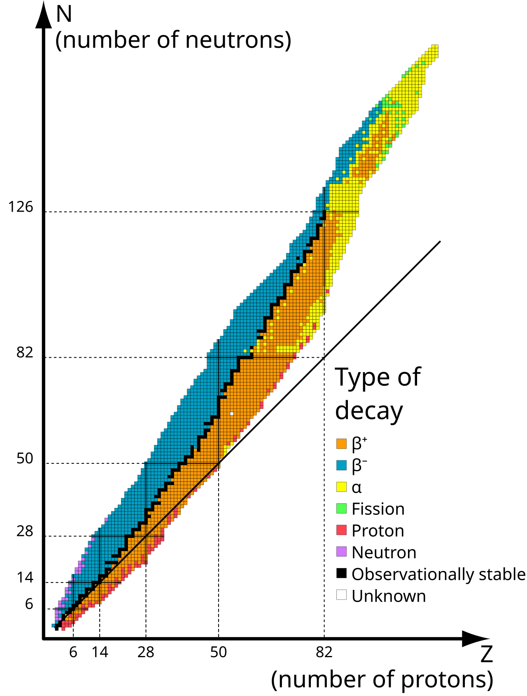
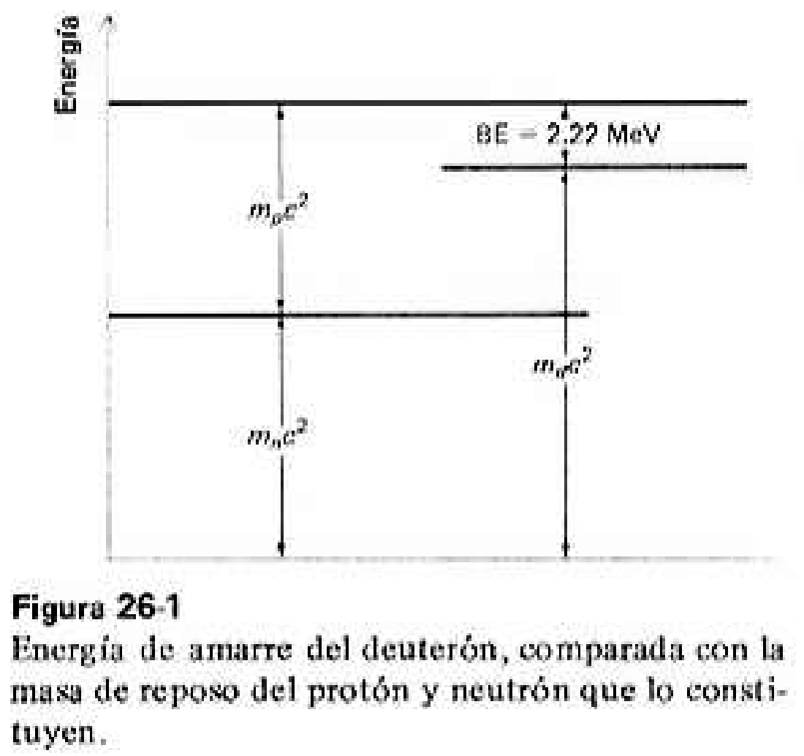
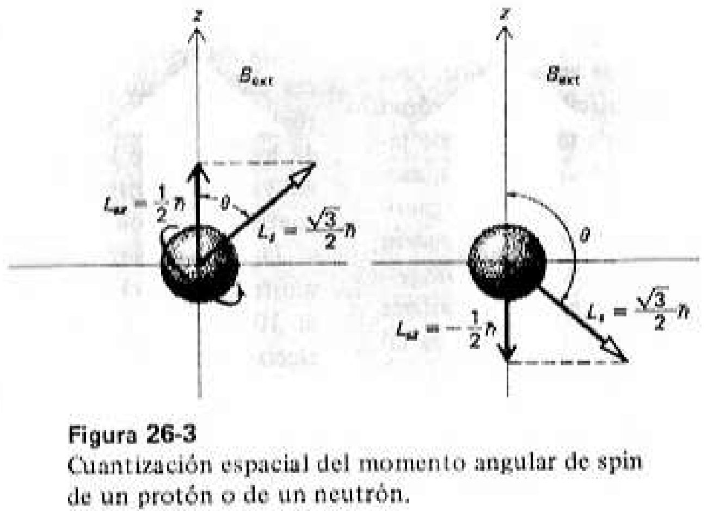
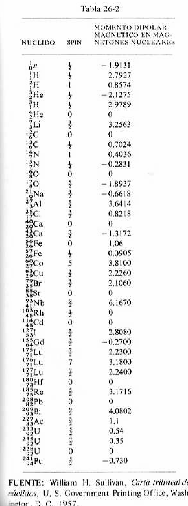
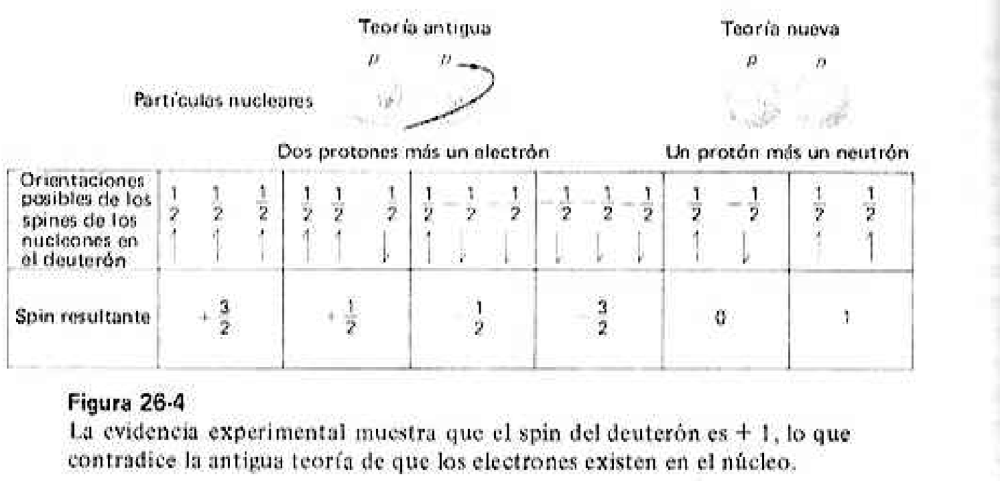
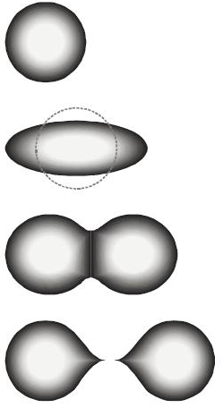
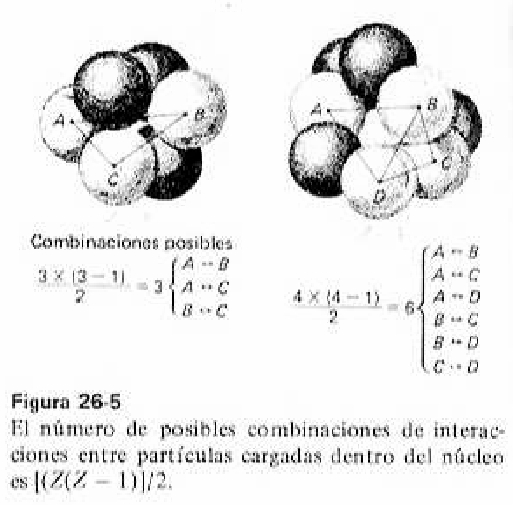
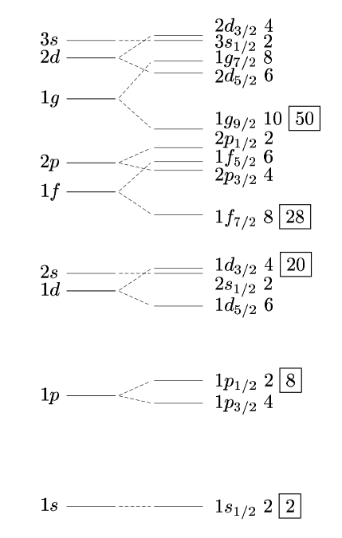

El capítulo 25 responde qué es el núcleo: de qué está hecho, qué lo mantiene unido y cuánta energía cuesta desarmarlo. El capítulo 26 responde cómo lo imaginamos: dos modelos distintos —y hasta incompatibles— que explican cada uno una mitad de los hechos.
Los experimentos de dispersión mostraron que el átomo consiste en un núcleo muy pequeño, de unos 10⁻¹⁴ m de diámetro, y electrones girando a gran distancia. Como casi toda la masa está en el núcleo, el átomo es en su mayor parte espacio vacío.
El modelo tenía que ser dinámico: en uno estático, la atracción electrostática entre el núcleo positivo y los electrones negativos habría causado el colapso inmediato.
Rutherford se basaba en la mecánica clásica y Bohr en los primeros conceptos cuánticos, pero fue la teoría cuántica de Schrödinger y Heisenberg la que describió correctamente la estructura atómica. Para el núcleo el problema es aún más complejo y todavía no existe una teoría completa y unificada: por eso se trabaja con modelos.
Sección 26-4. Explica la fisión.
Sección 26-5. Explica los números mágicos.
| Química atómica | Física nuclear | |
|---|---|---|
| Quién actúa | Electrones de capas y subcapas | Protones y neutrones |
| Energías | unos pocos eV | millones de eV (MeV) |
| Referencia | 13,6 eV para arrancar el electrón del hidrógeno en su estado base | 2,24 MeV para separar el deuterón en protón y neutrón |
Calor de formación del agua: 68,3 kcal/mol, con 1,0 kcal = 2,62 × 10²² eV y 6,02 × 10²³ moléculas en un mol.
Formar una molécula de agua libera 3 eV. La fisión del uranio-235 en kriptón-89 y bario-144 libera 200 MeV por átomo de uranio. Un factor de cien millones: esa es toda la distancia entre la química y la física nuclear.
Protones y neutrones, cuando forman parte del núcleo, se llaman nucleones. A menudo se omite N, que es redundante: ³⁵₁₇Cl₁₈ se escribe ³⁵₁₇Cl, y los físicos suelen escribir simplemente Cl-35.
| Familia | Comparten | Ejemplo del libro |
|---|---|---|
| Isótopos | el mismo Z, distinto A | ²⁸Si, ²⁹Si, ³⁰Si, ³²Si |
| Isóbaros | el mismo A, distinto Z | ¹⁶₈O y ¹⁶₇N |
| Isótonos | el mismo N | ¹⁴₆C₈, ¹⁵₇N₈, ¹⁶₈O₈ |
En la naturaleza el cloro es una mezcla: 75,53 % de ³⁵₁₇Cl (34,98 uam) y 24,47 % de ³⁷₁₇Cl (36,98 uam). La masa atómica media es el promedio ponderado:
Ese 35,46 es lo que se suele llamar peso atómico del cloro, «aunque éste no sea su nombre apropiado».
| Isótopo | Símbolo | Masa (uam) | Abundancia |
|---|---|---|---|
| Hidrógeno | ¹₁H | 1,007825 | 99,99 % |
| Deuterio | ²₁H | 2,014102 | 0,01 % |
| Tritio | ³₁H | 3,016049 | trazas |
Los protones tienen carga positiva y están apretadamente distribuidos dentro del núcleo. Según la ley de Coulomb deberían repelerse con enorme intensidad y dispersarse. Es difícil explicar la estabilidad del núcleo a menos que exista otra fuerza atractiva mucho más intensa. Esas fuerzas se clasifican como interacciones fuertes.
Anunció las principales características de las fuerzas nucleares y postuló la existencia de una partícula llamada pión, con una masa en reposo de 270 me —270 veces la masa del electrón—. El pión jugó un papel decisivo en la explicación de las fuerzas nucleares.
Solo son efectivas en cortos intervalos: distancias del orden de 10⁻¹⁵ m o menores.
La interacción p-p, n-n y p-n es la misma, excluyendo las fuerzas de Coulomb.
Son las fuerzas más intensas conocidas en la naturaleza. Gravedad y electromagnetismo se descubrieron antes solo porque actúan a escala macroscópica.
Un nucleón completamente rodeado por otros ya no puede ligar más: los de fuera «no sienten» al nucleón rodeado.
Las dimensiones nucleares se escriben en fermis. Todo el capítulo se mueve entre 0,5 F y unos pocos fermis.
Las nucleares son las únicas fuerzas de la naturaleza que se saturan. Cuando un nucleón queda completamente rodeado por otros, su capacidad de actuar sobre más partículas llega a un tope. Esta propiedad es la que justifica, en el capítulo 26, comparar el núcleo con una gota de líquido.
Cuando el protón está muy lejos, toda su energía es cinética. Al acercarse es repelido por el núcleo positivo y experimenta un potencial repulsivo de Coulomb:
Como la curva da dV/dr < 0, la fuerza eléctrica FE = −e dV/dr > 0 es repulsiva.
con a = mc/ħ, m la masa del protón y g una constante relacionada con el núcleo. Los neutrones no encuentran barrera: al no tener carga, «sienten» las fuerzas nucleares desde algo más lejos que las partículas cargadas.
El núcleo tiene carga +Ze. Parecería que su masa debiera ser la suma de sus piezas: Zmp + Nmn. Pero los espectrómetros de masa señalan que
A esa diferencia se le llama déficit de masa.
Cuando los Z protones y los N neutrones se combinan para formar un núcleo estable, algo de la masa desaparece en forma de energía liberada, normalmente como energía de rayos γ.
| Partículas cargadas dispersadas | r₀ = 1,2 × 10⁻¹⁵ m = 1,2 F |
| Neutrones dispersados | r₀ = 1,5 × 10⁻¹⁵ m = 1,5 F |
| Para resolver problemas | r₀ = 1,3 F |
Los neutrones «sienten» las fuerzas nucleares a distancia algo mayor porque la barrera de Coulomb no les ofrece resistencia.
Un solo nucleón (A = 1) ocupa ⁴⁄₃πr₀³: el volumen nuclear es directamente proporcional a A. Dicho de otro modo, los nucleones se empaquetan siempre igual de apretados, sea el núcleo grande o pequeño.
«Un número increíblemente grande»: un centímetro cúbico de materia nuclear pesaría doscientos millones de toneladas. Aquí mN = 1,67 × 10⁻²⁷ kg es la masa del nucleón.
El radio atómico es 10⁴ veces el radio nuclear, así que la densidad atómica es 10¹² veces menor:
| Núcleo | ρN ≅ 2 × 10¹⁷ kg/m³ |
| Átomo | ρA ≅ 2 × 10¹⁷ ⁄ (10⁴)³ = 2 × 10⁵ kg/m³ |
| Agua (materia macroscópica) | ρw = 1 g/cm³ = 10³ kg/m³ |
La masa que desaparece se convierte en ΔE = (Δm)c². Esa energía es la energía de amarre BE del núcleo: la energía mínima necesaria para separar un núcleo estable en los protones y neutrones que lo constituyen.
Las tablas de núclidos están en masas atómicas, no nucleares. Hay que convertir:
Al sustituir, los Zme se cancelan y queda la fórmula que se usa en la práctica:
El núcleo es estable: hay que suministrarle energía desde fuera para separarlo.
El núcleo es inestable y se desintegrará por sí mismo.
| ZmH = 8 × 1,007825 | 8,062600 uam |
| Nmn = 8 × 1,008665 | 8,069320 uam |
| Suma | 16,131920 uam |
| − masa atómica del ¹⁶₈O | 16,000000 uam |
| BE | +0,131920 uam |
El signo más indica que el núcleo es estable.
La energía de separación SE es la energía mínima que debe suministrarse para remover un solo nucleón del núcleo: el nucleón menos ligado. Es la energía de amarre del nucleón más débilmente ligado.
Desarmar el núcleo completo en todos sus protones y neutrones.
Arrancar un nucleón y dejar el resto intacto.
Se aplica la conservación de la masa-energía: se suman las masas de lo que queda después y se les resta la masa de lo que había antes.
SE = (masa atómica del ¹⁵₇N + mH) − (masa atómica del ¹⁶₈O)
| masa atómica del ¹⁵₇N | 15,000108 uam |
| mH | 1,007825 uam |
| Suma | 16,007933 uam |
| − masa atómica del ¹⁶₈O | 16,000000 uam |
| Energía de separación | 0,007933 uam |
«¿Puede usted sugerir por qué esta energía de amarre de un solo protón (7,40 MeV) es menor que la energía de amarre por nucleón calculada en el ejemplo 25-2 (7,68 MeV)?»
Porque BE/A es un promedio. El protón que arrancamos es el que está menos ligado, y al quitarlo dejamos un ¹⁵N que ya no es un núcleo tan favorecido. El ejercicio 25-9 vuelve sobre esto con un caso aún más extremo.
Es el mismo método del Ejemplo 25-3, pero quitando un neutrón en lugar de un protón. Al sacarle un neutrón al helio-4 queda helio-3.
El núcleo del ¹H es el protón: la masa del átomo y la del núcleo son prácticamente la misma. Si la masa es igual en los dos casos, la razón de densidades es simplemente la razón inversa de los volúmenes, es decir el cubo de la razón de radios.
Comparadas con las químicas, las energías que atan a los nucleones son muy grandes. Aun así, cuando neutrones, protones, partículas α o fotones de alta energía chocan con el núcleo pueden producir cambios: la partícula entra y se expulsan otras, el núcleo se fractura, o simplemente rebota en una colisión elástica.
La estabilidad total del núcleo se mide en términos de la energía de la partícula incidente y de las energías de amarre de las partículas que lo forman.
Tras el protón del hidrógeno, la estructura más simple es el deuterón: un protón y un neutrón. Su desintegración es
Con Z = N = 1, la ecuación (25-15) queda BE = mH + mn − M(²₁H):
| mH | 1,007825 uam |
| + mn | 1,008665 uam |
| Suma | 2,016490 uam |
| − masa atómica del ²₁H | 2,014102 uam |
| BE | 0,002388 uam = 2,22 MeV |

La BE del deuterón se mide por fotodesintegración: fotones monoenergéticos —rayos γ— son absorbidos por el núcleo, que se desintegra.
Con Kp = Kn = 0 se obtiene la energía umbral:
El efecto fotonuclear inverso: la síntesis de protones y neutrones en reposo produce fotones γ de 2,22 MeV. Medir ese fotón es medir la energía de amarre.
| Protones | Neutrones | Núclidos estables |
|---|---|---|
| par | par | 160 |
| par | non | 56 |
| non | par | 52 |
| non | non | 4 |
| Total | 272 |
Para Z < 20 la línea de estabilidad es recta, con N = Z. Para los núclidos más pesados, Z > 20, la curva se dobla hacia N > Z.
La razón: para grandes valores de Z la repulsión electrostática de Coulomb se vuelve importante, y el número de neutrones debe ser mayor para compensar ese efecto repulsivo. Los neutrones aportan fuerza nuclear atractiva sin aportar repulsión eléctrica.
El protón y el neutrón, igual que el electrón, tienen cada uno un spin intrínseco:
con el número cuántico I = ½, de donde
En presencia de un campo magnético externo Bext, el momento angular de spin está cuantizado espacialmente respecto al campo. Tomando el eje z en la dirección del campo, solo tiene las componentes
Dos orientaciones posibles, ni una más: es lo que dibuja la figura 26-3.
Además del spin, los nucleones tienen momento angular orbital. El momento angular resultante del núcleo se obtiene sumando los momentos orbitales y de spin de todos los nucleones:
El número cuántico IN, llamado spin nuclear, toma valores 0, 1, … o semienteros ½, 3/2, …

El electrón rotatorio tiene asociado un momento dipolar magnético igual al magnetón de Bohr, eħ/2me. De forma análoga, un nucleón tiene asociado un magnetón nuclear:
Como mp = 1836 me, el magnetón nuclear es 1836 veces menor que el de Bohr:
Con el eje z a lo largo de Bext, las componentes z —las únicas que pueden observarse— del momento dipolar magnético del protón y del neutrón son:

Que los electrones sí existían en el núcleo, y que la carga neta positiva se debía a un exceso de protones sobre electrones. Se suponía, por ejemplo, que el núcleo de deuterio constaba de dos protones y un electrón nuclear, y que el exceso de carga +1e se compensaba con un electrón de la capa exterior.
El descubrimiento del neutrón por Chadwick. Se propuso entonces una teoría nueva que negaba la presencia de electrones nucleares: el núcleo contiene solamente protones y neutrones, y ningún electrón. Desde entonces se han hecho varios experimentos distintos para verificarlo.

La prueba 3 es un cálculo de dos líneas que decide una cuestión de física fundamental. El ejercicio 26-9 pide hacer exactamente el mismo cálculo, pero «en sentido opuesto»: para un electrón encerrado en un átomo en lugar de en un núcleo. El resultado explica por qué el electrón sí puede vivir ahí.
«Puesto que ninguna teoría completa da cuenta de todas las propiedades nucleares, se han desarrollado varios modelos del núcleo para describir diferentes propiedades nucleares.» El primero es el de la gota líquida.
En un líquido, las energías de ligadura de dos átomos en una molécula son independientes de los demás átomos de esa misma molécula. Esa situación es similar al efecto de saturación de las fuerzas nucleares, donde la energía de amarre por nucleón permanece prácticamente constante para número de masa A ≳ 20.

Propuesta para la energía de amarre nuclear de un núcleo (Z, N, A):
| δ | Z | N | A |
|---|---|---|---|
| 34 | par | par | par |
| 0 | par | non | non |
| 0 | non | par | non |
| 34 | non | non | par |
Mientras mayor es el número A de nucleones, más difícil es remover del núcleo a los protones y neutrones individuales. La energía de amarre es directamente proporcional al número total de nucleones, en el mismo sentido en que el calor de vaporización es proporcional a la masa del líquido.
Los nucleones de la superficie no están completamente rodeados por otros. Es similar a la tensión superficial de los líquidos. Como reduce la energía de amarre, aparece como cantidad negativa.
Cada partícula cargada repele a todas las demás: hay Z(Z−1)/2 parejas posibles. La energía es además inversamente proporcional a R, y se sustituye R = r₀A¹ᐟ³:
Se origina por la falta de simetría entre el número de protones y el de neutrones. La máxima estabilidad ocurre cuando N = Z; cualquier desviación introduce la asimetría N − Z = A − 2Z y decrementa la estabilidad.
Un término puramente correctivo. Se añade si el número de masa A es par, lo que concuerda con la fórmula semiempírica y con los resultados de laboratorio. Si A es non, no es necesario corregir.

Explica la división del núcleo en dos o más partes: la fisión nuclear.
No describe los estados excitados de energía que sabemos que existen. «Por esta razón, debe desarrollarse otro modelo nuclear.»
Muchas propiedades nucleares varían periódicamente, igual que las atómicas en la tabla periódica. Los núcleos más estables ocurren cuando Z o N valen:
Son los números mágicos. El modelo de capas los explica proponiendo que protones y neutrones forman capas cerradas semejantes a las electrónicas.
Observó que el patrón de composición de los isótopos naturales cambia en el ¹⁶₈O y otra vez en el ³⁶₁₈A. Sin violar el principio de Pauli:
| Capa | l | 2(2l+1) | Se cierra en |
|---|---|---|---|
| s | 0 | 2 p + 2 n | ⁴₂He |
| p | 1 | 6 p + 6 n | ¹⁶₈O |
| d | 2 | 10 p + 10 n | ³⁶₁₈A |

El tercer término siempre da mħ, con m = 0, 1, 2, … Estas tres contribuciones explican los núclidos estables que aparecen en la naturaleza.
No existen dos protones ni dos neutrones con el mismo conjunto de números cuánticos. Los protones llenan los niveles disponibles en pares de spines antiparalelos, y lo mismo los neutrones. Cuando ambos completan capas cerradas, el momento angular orbital total es cero y el spin nuclear total es cero.
Los casos de Z par y N non, o Z non y N par, tendrán un protón o un neutrón que no forma pareja. Ese nucleón, con spin ½ħ, se combina con el momento angular orbital mħ. Como m es entero, el spin nuclear resultante es mħ ± ½ħ: siempre semientero.
Los núclidos non-non tienen un protón y un neutrón sin aparear, y el spin nuclear total es entero: ħ, 2ħ, 3ħ…
| Z | N | Spin nuclear | Ejemplo del libro |
|---|---|---|---|
| par | par | 0 | ⁶⁰₂₈Ni₃₂ |
| par | non | ½, 3/2, 5/2, 7/2, … | ⁶⁷₃₀Zn₃₇ (5/2 ħ) |
| non | par | ½, 3/2, 5/2, 7/2, … | ⁴³₂₀Ca (7/2 ħ) |
| non | non | 1, 2, 3 | ²₁H₁ (1ħ) · ¹⁰₅B₅ (3ħ) |
Trata el núcleo como un todo continuo. Acierta con la energía de amarre media y la fisión; falla con los estados excitados.
Trata a cada nucleón individualmente en niveles cuantizados. Acierta con los números mágicos y los spines.
El libro hace este mismo cálculo en §26-3 para Δx = 10⁻¹⁴ m y obtiene 20 MeV. Aquí el átomo es diez mil veces más grande, así que el momento es diez mil veces menor. Eso cambia la fórmula de la energía cinética: hay que comprobar antes si el electrón es relativista o no.
No basta con los valores absolutos: el plutonio es quince veces más grande, así que todo le sale mayor. Lo interesante es el peso de cada término frente al volumétrico. Ahí se ve el cambio de régimen.
1. El núcleo es diminuto, densísimo y pesa menos que sus piezas. Ese déficit de masa, convertido por ΔE = (Δm)c², es la energía que lo mantiene unido.
2. Lo que lo sostiene es una fuerza nueva: intensa, de corto alcance, independiente de la carga y saturable. Yukawa la explicó en 1935 con el pión.
3. La energía de amarre por nucleón vale unos 8 MeV y su curva lo gobierna todo: por un lado se fusiona, por el otro se fisiona.
4. En el núcleo no hay electrones, y lo demuestran tres caminos independientes: momentos magnéticos, el spin del deuterón y el principio de incertidumbre.
5 · La idea epistemológica. Ninguna teoría completa da cuenta del núcleo, así que la física usa dos modelos incompatibles a la vez: la gota líquida acierta con la fisión, el modelo de capas acierta con los números mágicos. Un modelo no es una teoría verdadera: es una herramienta con un dominio de validez declarado.
→ espacio siguiente · ← anterior
inicio / fin primera / última diapositiva
F pantalla completa · T tema claro/oscuro
1–9 saltar a una diapositiva · Esc cerrar
Las diapositivas 4, 6, 7, 11, 12, 14, 17, 19, 20, 21, 23 y 24 son interactivas: haz clic en los elementos resaltados durante la exposición.